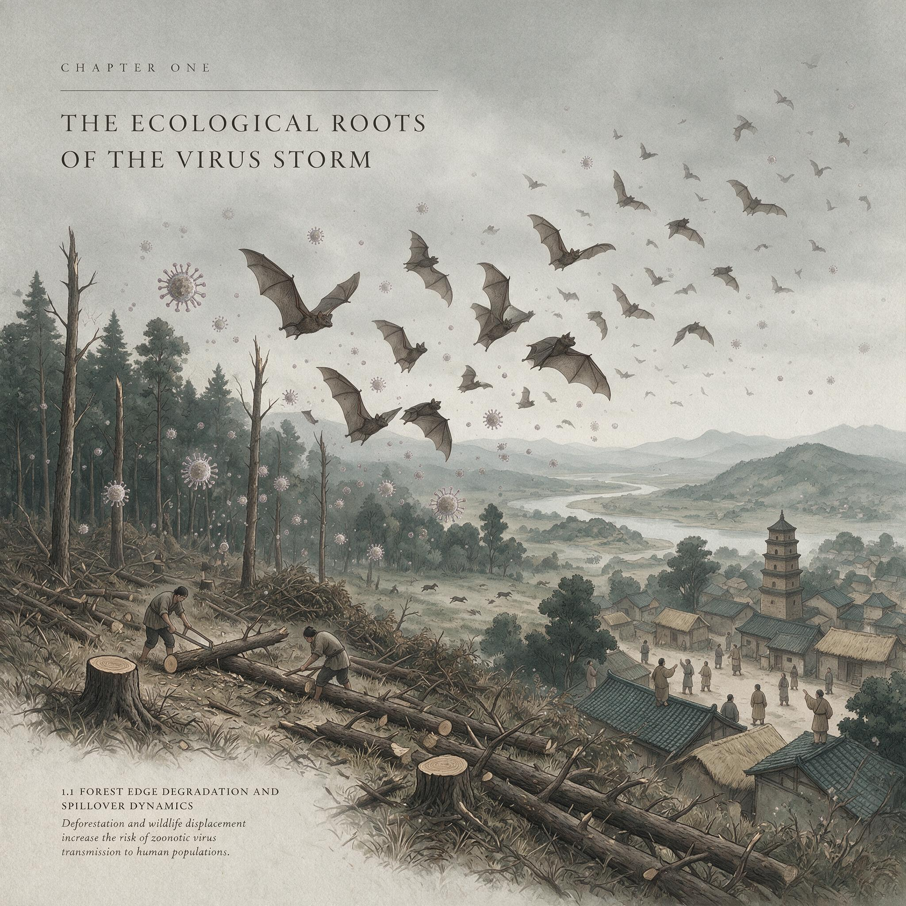

第 10 章
病毒风暴的生态学根源
第9章停在一个尖锐的悖论上：人类有意识地驾驭噬菌体——病毒引擎中最精准的那一类——尚且举步维艰，被制度惯性、专利逻辑和监管框架死死卡住。但就在我们为几百个重症监护室里的耐药菌感染殚

精竭虑的同时，人类无意识的行为正在以行星级的规模扰动病毒生态网络，释放出的后果远远超出了任何医疗体系的承受边界。
这不是一个关于医学失败的故事。这是一个关于生态学盲区的故事。病毒不是入侵者。至少，在它们自己的生态网络里不是。
在地球上存在了数十亿年的病毒循环圈，早于任何人类文明，早于任何灵长类动物，甚至早于多细胞生命的出现。在这个循环圈里，病毒与宿主之间达成的不是和平——和平这个词暗示了敌意的终止——而是某种更古老的东西：一种被演化反复调校过的共存状态。
要理解大流行，首先要理解这种状态，不是从人类的角度，而是从那些携带病毒却不生病的动物开始。蝙蝠，翼手目，哺乳动物中仅次于啮齿类的第二大类群，在地球上存在了至少五千万年。
如果你在东南亚的某个洞穴里见过它们——比如泰国考艾山洞，那里栖息着超过三百万只皱唇犬吻蝠——你会在黄昏时分看到一幅景象：三百万只蝙蝠从洞口倾泻而出，形成一条持续数小时的黑色烟柱，在暮色中蜿蜒数公里，像一条活着的河流倒灌进天空。这些蝙蝠的种群密度可以达到每平方公里数百只甚至上千只，个体之间通过密切的社会接触和梳理行为维持着稳定的群落结构。
它们的血液里携带着数量惊人的病毒。菊头蝠属携带的冠状病毒、狐蝠科携带的亨德拉病毒和尼帕病毒、犬吻蝠科携带的狂犬病毒相关毒株——这个清单可以一直列下去。
但关键不在于它们携带什么，而在于它们不表现什么：这些病毒在蝙蝠体内通常不引发任何明显的临床症状。病毒在那具小小的身体里进行着低水平复制，维持着可检测但不高昂的滴度，一头蝙蝠的免疫系统既不试图彻底清除病毒，病毒也不试图摧毁宿主。
这种调校是怎么发生的？答案藏在蝙蝠独特的生理特征里。蝙蝠是唯一能够持续飞行的哺乳动物。
飞行是一种极其昂贵的运动方式——一只蝙蝠在飞行时的新陈代谢率可以飙升到静息状态的十五倍，心率从每分钟三百次跳到超过一千次，核心体温在某些物种中可以达到四十一摄氏度。这种极端的生理状态带来了一个附带后果：大量自由基的产生和DNA损伤的累积。飞行是蝙蝠的生存策略，代价是细胞层面上的持续损伤。
哺乳动物的免疫系统通常会对这种损伤做出激烈反应——炎症、发热、免疫细胞动员。但蝙蝠不能承受这种反应。如果每次飞行都触发一次全身性的炎症风暴，蝙蝠会在几周内死于自身免疫系统的攻击。
于是，演化在这些动物身上塑造了一套独特的免疫调控机制：某些炎症通路被抑制或下调，但抗病毒干扰素通路保持持续激活。结果是一种“永远在线”的温和警戒状态——免疫系统不攻击病毒，但也不让病毒失控。
病毒在这种环境中生存，必须适应宿主的免疫压力，演化出更温和的复制策略。那些过于凶猛的变异株会迅速杀死宿主，而宿主死了，病毒也就失去了传播的机会。
那些过于温和的变异株则会被持续激活的免疫系统清除。留下来的，是懂得克制的病毒。
这种关系将蝙蝠的群落变成了科学家所说的“自然疫源地”——病毒在其中循环、变异，但被限制在一个相对封闭的生态圈内。在未受干扰的森林里，一只菊头蝠携带的冠状病毒要接触到人类，需要跨越一系列几乎不可能同时满足的条件：它需要先通过粪便或唾液将病毒排到环境中，病毒需要在一定温度和湿度下保持活性，另一个物种需要恰好接触到这些污染物，然后这个物种还需要与人类发生密切接触。在稳定的生态系统中，这些条件极少同时出现。溢出事件——病毒从自然宿主跳到新宿主——在自然界中本就罕见，大多数溢出要么无疾而终，要么只感染一两个个体就消失在演化盲端里。
类似的平衡也存在于其他宿主类群中。在北美洲西部的草原上，鹿鼠携带辛诺柏病毒，病毒在其尿液和粪便中排出，但鹿鼠本身几乎不受影响。
野生水禽——绿头鸭、针尾鸭、斑嘴鸭——是甲型流感病毒的自然储库，病毒在这些鸟类的肠道上皮细胞中复制，通过粪便排入水体，完成季节性的循环。在这些自然系统中，病毒、宿主和环境构成了一个相对稳定的三角。病毒是循环的一部分，不是破坏者。
但所有这些平衡都建立在一个前提之上：生态系统的完整性。当这个前提被打破时，病毒不再是循环的一部分，它变成了被释放的潜能。
打破平衡的第一只手，往往就是砍伐森林的那把锯。热带雨林是地球上最复杂的生态系统，同时是最密集的病毒库。一公顷的亚马孙雨林里生活着超过三百种哺乳动物、鸟类和爬行动物，每一种都可能携带独特而古老的病毒。这些病毒在森林内部循环了数万年甚至数百万年，从未接触过人类免疫系统。
然后，有一天，一条公路切进了森林腹地。伐木工人带着链锯和推土机进入，树冠被打开，阳光直射到此前永远阴暗的林床上。那些依赖树冠连接的动物被迫下降到地面，不同物种之间的接触频率急剧增加。
而人类——那些伐木工人、筑路工人、随后涌入的垦殖农民——直接走进了这个被搅乱的病毒循环圈。这不是假设。
1998年，马来西亚的尼帕病毒暴发就是这一模式的精确演示。事件的起点可以追溯到一片被砍伐的雨林——为了扩大棕榈油种植园，大片森林被清除。果蝠失去了栖息地和食物来源，被迫迁移到种植园边缘的果园觅食。猪场就建在果园旁边，猪吃掉了被果蝠唾液和尿液污染的掉落水果。病毒从蝙蝠跳到了猪，在猪群中扩增，然后跳到了养猪的农民。从森林砍伐到人类死亡，这中间的因果链条清晰得让人不安。
但仅仅是砍伐森林还不够。野生动物贸易，这个全球年交易额高达数十亿美元的产业，才是真正意义上的“病毒搅拌器”。
想象一个东南亚某地的活体动物市场——不是那种干净的、合规的现代市场，而是城乡结合部自发形成的传统集市。空气中混杂着家禽的羽毛和粪便气味、哺乳动物的腺体分泌物、人类的汗味和摩托车的尾气。铁笼子叠放在彼此之上，每一层的高度不超过四十厘米。
底层笼子里关着竹鼠，它们紧张地蜷缩在角落里，鼻尖抽搐着嗅闻空气中陌生的气味。紧挨着它们的笼子里是几只果子狸，爪子从铁栅栏间伸出来，抓挠着隔壁笼子的铁丝。再往上一层，几十只鸡挤在同一个笼子里，羽毛摩擦着羽毛，粪便滴落到下层笼子。角落里可能还有穿山甲蜷成一团，或者几只猕猴被拴在木桩上。
在这样的市场里，不同物种之间的空间距离不是以米计算的，而是以厘米甚至毫米计算。笼子之间的铁丝网阻隔不了体液、粪便和气溶胶。一只果子狸的尿液滴入竹鼠的食槽，竹鼠吃掉被污染的食物，竹鼠的粪便被清扫到过道，鸡在过道上啄食，鸡被顾客买走，带回家，或者在市场上宰杀，血液溅到案板和地面。每一个环节都是一次跨物种接触的机会，每一次接触都是一个潜在的病毒跳板。
2002年至2003年的SARS暴发，早期病例的流行病学调查将线索指向了中国广东的野生动物市场。后续研究在果子狸身上检测到了与SARS冠状病毒高度同源的病毒株。
但果子狸不是自然宿主——它们在被捕获后才感染病毒，市场上的密集关押为病毒提供了跨种跳跃的“搅拌器”。真正的自然宿主是菊头蝠，病毒在蝙蝠体内循环了不知多少年，然后通过某种途径——可能是粪便污染了果子狸的食物，或者两种动物在运输途中被关在同一辆车里——跳到了果子狸身上，在果子狸体内完成了一系列适应性突变，最终获得了感染人类细胞的能力。
这里有一个关键机制需要澄清：病毒从自然宿主直接跳到人类是极其困难的。病毒的表面蛋白需要与宿主细胞表面的受体精确匹配，就像一把钥匙需要打开一把特定的锁。蝙蝠的冠状病毒钥匙通常打不开人类细胞的锁。但中间宿主充当了“万能钥匙”的打磨车间。病毒在中间宿主体内复制时，会积累随机突变，其中某些突变恰好改变了表面蛋白的形状，让它能够部分结合人类受体。当这个经过“打磨”的病毒株接触到人类时，感染的门槛就被大大降低了。
这就是野生动物市场作为“搅拌器”的核心功能：它不仅是不同物种的物理接触点，而且是病毒适应性突变的加速器。
在自然环境中，一只蝙蝠和一只果子狸的相遇是偶然的、短暂的。但在一个市场里，它们被关在相邻的笼子里长达数天甚至数周，病毒有充足的时间建立感染、复制、变异、再感染。这就像你把一个需要几百年才能自然发生的演化过程压缩到了几周。
如果说野生动物市场是病毒跨种跳跃的搅拌器，那么集约化养殖场就是病毒扩增和变异的工业级温床。一座现代化的养鸡场，存栏量超过十万只，封闭式鸡舍里是一排排金属笼架，每一层都挤满了白色的肉鸡。这些鸡全部来自同一个商业品系——科宝500或者罗斯308——它们的基因型几乎完全一致，是数十年人工选育的产物，追求的是最快的生长速度和最高的饲料转化率。一致性是工业化养殖的核心价值：一致的大小、一致的生长周期、一致的肉品质量。
但这种一致性同时意味着，如果一种病毒能够感染其中一只鸡，它就能毫无阻力地感染所有鸡。在这座鸡舍里，十万只鸡构成的不再是一个种群，而是病毒的培养基。病毒在这种环境中不需要面对任何免疫学上的“障碍”。
在自然种群中，不同个体之间的基因差异意味着某些个体对特定病毒有天然抗性，这些个体成为阻断传播链的“防火墙”。但在一座商业化鸡舍里，所有的防火墙都被拆除了。病毒从一个个体传播到另一个个体，每次传播都是一次复制机会，每次复制都可能产生新的突变。在存栏量十万只的鸡舍里，病毒每天可以完成数百万次复制循环，突变的空间被扩展到了工业规模。
全球禽流感病毒的演化史就书写在这种环境中。野生水禽携带的低致病性流感病毒——在自然宿主肠道里温和复制的那种——通过某种途径进入集约化养鸡场后，在数万只基因相似的鸡体内快速传代，获得了高致病性突变。H5N1、H7N9、H5N8——这些代号背后，是病毒在工业化的“扩增器”里完成的一次次致命升级。
养猪场的情况同样如此。一座现代化的万头猪场，存栏密度可以达到每平方米超过一头猪。猪的生理特征让它们成为流感病毒的理想“混合容器”——猪的呼吸道细胞表面同时表达禽流感病毒偏好的受体和人流感病毒偏好的受体。
这意味着，如果一只猪同时感染了禽流感病毒和人流感病毒，两种病毒的基因片段可以在同一细胞内发生重配，产生全新的、人类免疫系统从未见过的病毒株。2009年的H1N1流感大流行，其病毒株就携带了禽、猪、人三种来源的基因片段，而这种重配很可能就发生在某个养猪场里。
现在，我们已经有了一个完整的溢出链条：森林砍伐将人类推进了病毒的自然循环圈，野生动物市场将不同宿主物种搅拌在一起促成跨种跳跃，集约化养殖场为病毒提供了工业级的扩增和变异平台。但还有最后一个界面，它将局部暴发转化为全球性事件。
这个界面就是全球航空网络。你可以在心里调出一幅航线图。不是那种连接着首都和旅游城市的简化版，而是包含所有商业机场的完整网络。全球有超过四万个机场，其中的国际枢纽机场——亚特兰大、迪拜、伦敦希思罗、北京首都——每个每天处理超过两千架次的起降。每年有超过四十亿人次乘坐飞机跨越国界。
从刚果盆地边缘的某个伐木营地到伦敦市中心，全程不超过二十四小时：先是几个小时的车程到达最近的设有简易跑道的城镇，一架小型飞机将乘客运到金沙萨或者布拉柴维尔，从那里搭乘国际航班，经停亚的斯亚贝巴或者迪拜，然后降落在希思罗机场。希思罗机场的入境大厅里，每天有超过二十万人穿过那些自动玻璃门，汇入地铁、出租车和公共汽车的洪流，在几个小时内分散到英国各地。
病毒不需要护照。它只需要一个正在潜伏期内的感染者——还在发烧但尚未出现明显症状，或者在症状出现前已经开始排毒。感染者登上飞机，在密闭的机舱里与数百人共享八个小时的空气，降落后融入了新的城市。到患者被确诊时，病毒可能已经跨越了五个时区，在他或她接触过的数百人中的某些人身上开始了新一轮的复制。
这就是为什么那些曾经被限制在特定地理区域内的病毒，现在可以在数周内成为全球性事件。病毒没有变得更强大，是人类自己为病毒铺设了高速公路。2019年年底，中国武汉的一批不明原因肺炎病例被报告。
随后的流行病学调查将早期病例与华南海鲜批发市场联系起来。这个市场——和全球无数类似的市场一样——出售活体动物，包括家禽、竹鼠、蛇、兔子和各种水产。不同的物种被关在密集的笼子里，顾客穿行其间，挑选、触摸、购买。
市场在2020年1月1日被关闭，清空，消毒。后来你看到的那些照片里，只剩下空荡荡的水泥台面、堆叠的废弃笼子和地面上残留的水渍。一个曾经喧嚣、嘈杂、充满生命气息的空间，突然归于寂静。
但寂静不是结局。病毒已经在市场关闭之前完成了跳跃。它可能来自某种菊头蝠，在某个中间宿主——可能是穿山甲？
这方面的证据仍然存在争议，研究人员在不同研究中得出了不完全一致的结论——体内经历了适应性突变，获得了结合人类ACE2受体的能力。然后，它感染了第一个人，然后是第二个、第三个。
到市场被关闭的时候，人传人的链条已经建立，病毒已经沿着铁路、公路和航线扩散到了武汉之外。随后的几周里，全球航空网络将病毒带到了每一个大陆。
各国关闭边境、限制航班、实施封锁，但这些措施只能延缓传播，不能阻止。病毒已经在人类种群中站稳了脚跟。
从生态学的角度看，这就是一次成功的跨物种定殖——病毒从自然宿主库溢出，利用人类提供的“搅拌器”和“扩增器”完成了适应性演化，然后借助人类自己构建的全球交通网络实现了指数级扩散。这不是意外，不是阴谋，不是某个特定地点或特定人群的过错。这是系统失衡的必然释放。
这里有一个容易被忽视的反讽：我们在第9章看到，人类用了几十年的时间，动用了大量的资金和制度资源，试图让噬菌体疗法——一种有意识地利用病毒引擎的尝试——落地，但至今仍困难重重。而人类无意识中对病毒生态网络的扰动，却在短短几十年里释放出了足以席卷全球的大流行。我们无法驯服那些我们想要的病毒，却轻易地激活了那些我们不想遇到的病毒。
这之间的差距，不是技术能力的差距，而是注意力的差距——我们一直在盯着医学的边界，却忽略了生态学的边界。
2014年至2016年西非的埃博拉暴发，遵循了类似但略有不同的模式。埃博拉病毒的天然宿主被认为是某种果蝠，病毒在蝙蝠种群中长期循环，偶尔溢出到灵长类动物和人类。
但这次暴发的规模前所未有——几内亚、利比里亚和塞拉利昂，超过两万八千例感染，超过一万一千例死亡。为什么会这么严重？
答案同样指向人类活动的介入：森林砍伐和采矿活动将人类推入偏远的森林区域，增加了与果蝠的接触；而西非地区日益增长的流动性和城市化，让病毒在疫情早期就触及了人口密集的城市中心。在2014年之前，埃博拉暴发通常局限在偏远的乡村地区，通过严格的隔离措施可以在几周内扑灭。但这一次，病毒找到了进入城市网络的路径，而城市的密集人口和频繁流动给了它前所未有的传播机会。
这不是孤立的案例。拉沙热在西非的持续暴发，与农业扩张导致的啮齿类动物栖息地增加有关——农田和粮仓为鼠类提供了丰富的食物，将其种群密度推高到自然水平之上，而更高的种群密度意味着更高的病毒携带率和更高的溢出风险。
尼帕病毒在孟加拉国的反复暴发，与椰枣树汁的采集方式有关——果蝠在夜间吸食树汁，将唾液和尿液排入采集容器，未经消毒的树汁被直接饮用或出售。裂谷热在东非的暴发，与修建水坝和灌溉系统有关——新的水体为携带病毒的蚊子提供了繁殖地，而密集的牲畜放牧为病毒的扩增提供了宿主群。
每一个案例都在讲述同一个故事：人类活动——对资源的追求、对空间的扩张、对效率的执念——在多个层面上同时扰动了病毒的自然循环网络。我们砍伐森林，把野生动物挤压到更小的栖息地，增加它们之间的接触和我们与它们的接触；我们捕捉和运输野生动物，把不同物种和它们携带的病毒搅拌在一起；我们以工业化的规模养殖基因相似的动物，为病毒提供了完美的扩增平台；我们建造机场和航线，把局部暴发变成了全球事件。
这些行为本身不是“错误”——它们是现代人类文明运转的基本方式，是数十亿人获得食物、能源和经济增长的代价。
但代价的另一面，就是病毒生态网络的失衡，以及这种失衡在流行病学层面的必然表达。
这不是一个可以被“解决”的问题。病毒的自然循环网络已经存在了数十亿年，它不会因为人类的不适而消失。我们无法根除蝙蝠体内的冠状病毒，无法消灭野生水禽携带的流感病毒，无法让全球四十亿人次的航空流量归零，也无法让工业化养殖退回到农家散养模式——至少在不引发全球性饥荒的前提下做不到。
我们面对的不是一个可以被消灭的敌人，而是一个必须被重新理解的关系。
在刚果盆地边缘那片被砍伐的雨林里，伐木营地已经废弃了好几年。推土机的车辙被雨水冲刷成了浅浅的沟渠，先锋植物——那些快速生长的蕨类和灌木——重新覆盖了裸露的红土。森林边缘的树冠开始向空地延伸，但完全恢复需要几十年甚至更久。
夜晚，蝙蝠仍然从密林深处飞出，它们的翅膀掠过新生的树冠，血液里携带着古老的病毒，沿着被月亮照亮的飞行路线，穿过那条已经空无一人的伐木公路，飞向远处的果园。那一刻，你看到的不是一个被破坏的生态系统，而是一个平静的、正在自我修复的循环网络——它只是暂时不再包括人类。